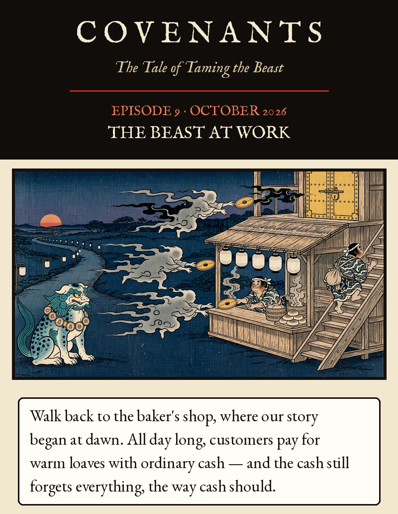
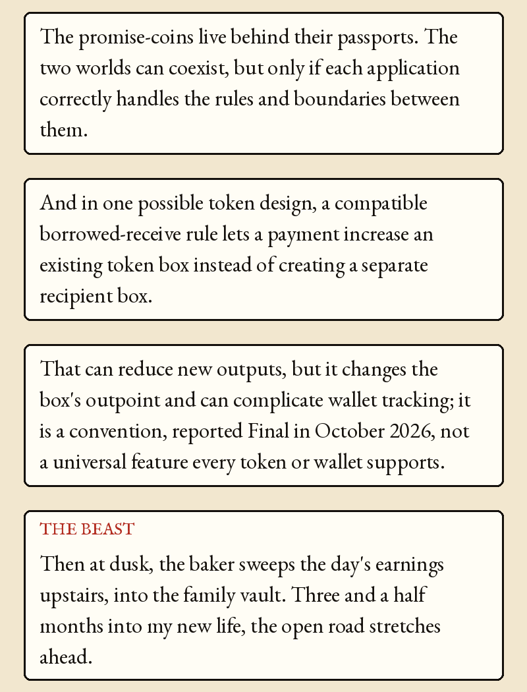
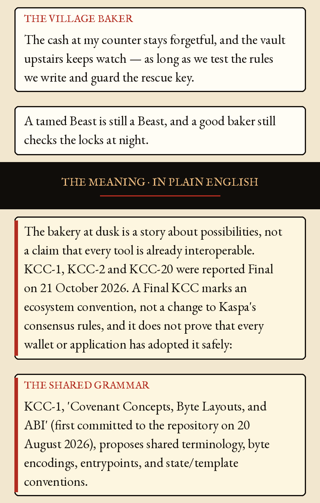
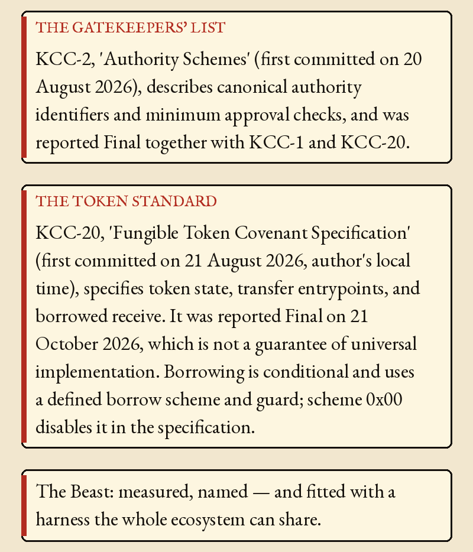
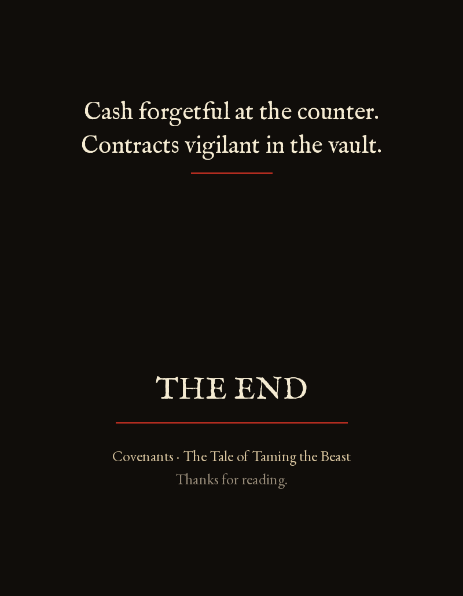

Episode 9 · The Beast at Work





Episode 9 · The Beast at Work — October 2026
Walk back to the baker's shop, where our story began at dawn. All day long, customers pay for warm loaves with ordinary cash — and the cash still forgets everything, the way cash should. The promise-coins live behind their passports. The two worlds can coexist, but only if each application correctly handles the rules and boundaries between them.
And in one possible token design, a compatible borrowed-receive rule lets a payment increase an existing token box instead of creating a separate recipient box. That can reduce new outputs, but it changes the box's outpoint and can complicate wallet tracking; it is a convention, reported Final in October 2026, not a universal feature every token or wallet supports.
THE BEAST: Then at dusk, the baker sweeps the day's earnings upstairs, into the family vault. Three and a half months into my new life, the open road stretches ahead.
THE VILLAGE BAKER: The cash at my counter stays forgetful, and the vault upstairs keeps watch — as long as we test the rules we write and guard the rescue key. A tamed Beast is still a Beast, and a good baker still checks the locks at night.
THE MEANING · IN PLAIN ENGLISH
The bakery at dusk is a story about possibilities, not a claim that every tool is already interoperable. KCC-1, KCC-2 and KCC-20 were reported Final on 21 October 2026. A Final KCC marks an ecosystem convention, not a change to Kaspa's consensus rules, and it does not prove that every wallet or application has adopted it safely:
THE SHARED GRAMMAR — KCC-1, 'Covenant Concepts, Byte Layouts, and ABI' (first committed to the repository on 20 August 2026), proposes shared terminology, byte encodings, entrypoints, and state/template conventions.
THE GATEKEEPERS' LIST — KCC-2, 'Authority Schemes' (first committed on 20 August 2026), describes canonical authority identifiers and minimum approval checks, and was reported Final together with KCC-1 and KCC-20.
THE TOKEN STANDARD — KCC-20, 'Fungible Token Covenant Specification' (first committed on 21 August 2026, author's local time), specifies token state, transfer entrypoints, and borrowed receive. It was reported Final on 21 October 2026, which is not a guarantee of universal implementation. Borrowing is conditional and uses a defined borrow scheme and guard; scheme 0x00 disables it in the specification.
The Beast: measured, named — and fitted with a harness the whole ecosystem can share.
Cash forgetful at the counter. Contracts vigilant in the vault.
Canonical KCC repository: https://github.com/kaspanet/kccs. KCC-1, KCC-2 and KCC-20 were reported Final on 21 October 2026 (crypto.news, TokenPost, PrimeXBT coverage). Final confirmed by the project author on 24 Oct 2026 (see commit above); cached web snapshots can still show Draft or Last Call. Verified from a fresh clone: kcc-0001.md, kcc-0002.md and kcc-0020.md all read 'Status: Final' at commit 1ed87aef59faff8354061aee30f734a3b8b2c3d2 (21 Oct 2026, 16:50 +0200). First-commit dates in that repository: KCC-1 20 Aug 2026 22:19 +0200, KCC-2 20 Aug 2026 22:31 +0200, KCC-20 21 Aug 2026 02:13 +0300 (20 Aug in UTC); earlier drafts may predate the repository. KCC-20 borrowed receive is conditional; scheme 0x00 disables it, and using it changes the UTXO outpoint. Toccata is described as live on mainnet since 30 June 2026 in the official Kaspa developer docs: https://kaspa.org/build; its scheduled DAA/time are in https://github.com/kaspanet/rusty-kaspa/blob/master/docs/toccata-guide.md. The bakery scene is fiction, not evidence of a deployed application or a security guarantee.